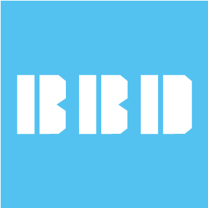
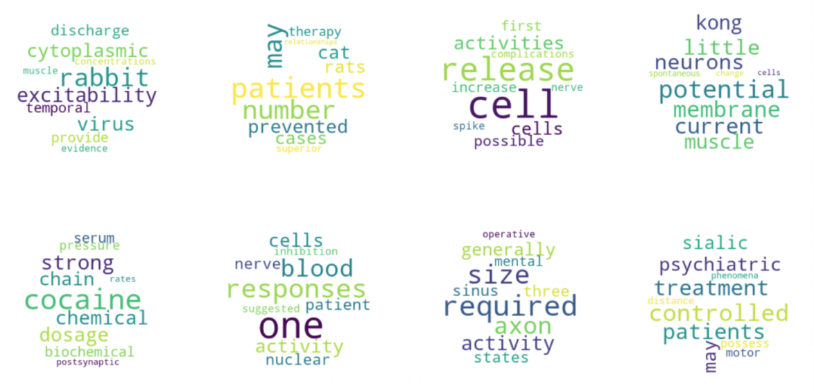

about me
computational social science @ University of Chicago
Hi, my name is Harry. I'm a master's student in computational social science, a behavioral data science enthusiast and a TensorFlow practitioner. I believe that three things are moving the big data era forward: more collectable data, faster computation and better models.
As a student of applying theoretical and technological advancement to solving real-life problems, I think everyday on how I can leverage these three things
to create more social impact. Here, you can find my experience and the recent projects I have been working on. Enjoy!
experience
education
University of Chicago
August 2019 - Now
- Concentration in Computational Social Science
- Coursework: Content Analysis, Speech Technologies, Python Programming, Machine Learning, Behavioral Economics
Emory University
August 2015 - May 2019
- Economics & Psychology
- GPA: 3.82
work
Whiznook Data Scientist
November 2019 - Now
NLP
Python
AWS
- Designed, implemented and visualized 9 behavioral data science models for an online team analytics game
- Applied sentiment analysis, topic modeling and key word analysis in NLP with RNN, NLTK and spaCy to provide instant feedback for all customers
Booth School of Business Data Analytics Researcher
Oct 2019 - May 2020
Python
R
Tableau
SSH
Econometrics
- Gathered, assessed and cleaned 3 million rows of data from Nielsen Analytics consumer datasets to investigate the effect of “Chicago Soda Tax” on consumption behaviors
- Utilized Pandas library and behavioral science theories to detect a 30% drop in soda consumption after the tax
- Visualized the difference-in-difference output using R and Tableau

BBD Data Science Intern
June 2019 - Aug 2019
Python
SQL
SSH
Econometrics
- Built a retail risk management XGBoost model as part of a team for a major US bank
- Performed feature selection and hyperparameter tuning to lower the retail default recall by more than 1%
- Extracted and analyzed China's daily reported data across 4 sectors for BBD China New Economy Index (NEI) using SQL
technology
Python
Tensorflow
PyTorch
R
SQL
Spark
AWS
Tableau
Excel
certification
projects

Team Chat Analyzer
A team chat analyzer that takes in chat history like Slack logs and returns analysis on chat distribution, team dynamics, reply time, chat topic distribution, chat sentiment and subjectivity.
Face Mask Detector
A face mask detector that supports image and live video face mask detection built with TensorFlow and OpenCV.

Neuroscience NLP
Analyzed neuroscience and psychology abstracts for the past 5 decades using large scale and NLP techniques

Speech Classification
Transformed speech data into MFCCs and used ML and deep learning models to evaluate classification accuracies
Netflix Pattern Detection
Used clustering and topic modeling to discover patterns in Netflix genre descriptions.